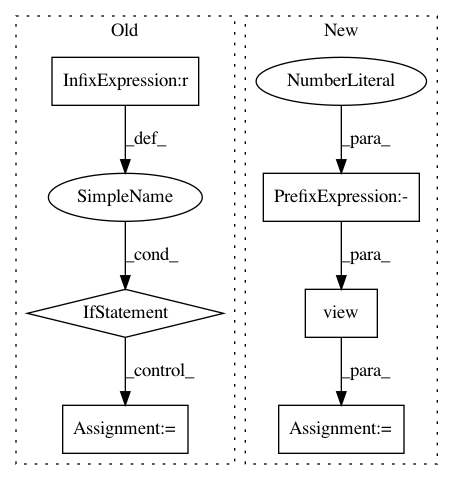

1a73a1367fedfa8368b6c42103e60e1b370bc14a,catalyst/contrib/criterion/focal_loss.py,FocalLoss,forward,#FocalLoss#Any#Any#,11
Before Change
// TODO refactor
def forward(self, outputs, targets):
if targets.size() != outputs.size():
raise ValueError(
f"Targets and inputs must be same size. "
f"Got ({targets.size()}) and ({outputs.size()})"
)
max_val = (-outputs).clamp(min=0)
log_ = ((-max_val).exp() + (-outputs - max_val).exp()).log()
loss = outputs - outputs * targets + max_val + log_
invprobs = F.logsigmoid(-outputs * (targets * 2.0 - 1.0))
loss = (invprobs * self.gamma).exp() * loss
After Change
num_classes = logits.size(1)
loss = 0
targets = targets.view(-1)
logits = logits.view(-1, num_classes)
for cls in range(num_classes):
// Filter anchors with -1 label from loss computation
if cls == self.ignore:
continue
cls_label_target = targets[..., cls].long()
cls_label_input = logits[..., cls]
loss += sigmoid_focal_loss(
cls_label_input,
cls_label_target,
In pattern: SUPERPATTERN
Frequency: 5
Non-data size: 6
Instances
Project Name: Scitator/catalyst
Commit Name: 1a73a1367fedfa8368b6c42103e60e1b370bc14a
Time: 2019-04-19
Author: scitator@gmail.com
File Name: catalyst/contrib/criterion/focal_loss.py
Class Name: FocalLoss
Method Name: forward
Project Name: mapbox/robosat
Commit Name: 4a486c33d7faa7938355658abca7e936022389b0
Time: 2018-10-02
Author: o@courtin.co
File Name: robosat/metrics.py
Class Name: MeanIoU
Method Name: add
Project Name: cornellius-gp/gpytorch
Commit Name: 4c6458b841bb49610b5cf6b9fbab94df5cad85ee
Time: 2019-01-23
Author: gpleiss@gmail.com
File Name: gpytorch/lazy/toeplitz_lazy_tensor.py
Class Name: ToeplitzLazyTensor
Method Name: _quad_form_derivative
Project Name: ikostrikov/pytorch-a2c-ppo-acktr
Commit Name: c28b2e4cfd60a5b131a1f8752d484b9c99d05e81
Time: 2017-11-17
Author: ikostrikov@gmail.com
File Name: main.py
Class Name:
Method Name: main
Project Name: rusty1s/pytorch_geometric
Commit Name: 5a9c6aa03ea55ad85601c0c33ff762d6a2e2c7fa
Time: 2020-05-23
Author: matthias.fey@tu-dortmund.de
File Name: torch_geometric/nn/models/node2vec.py
Class Name: Node2Vec
Method Name: loss